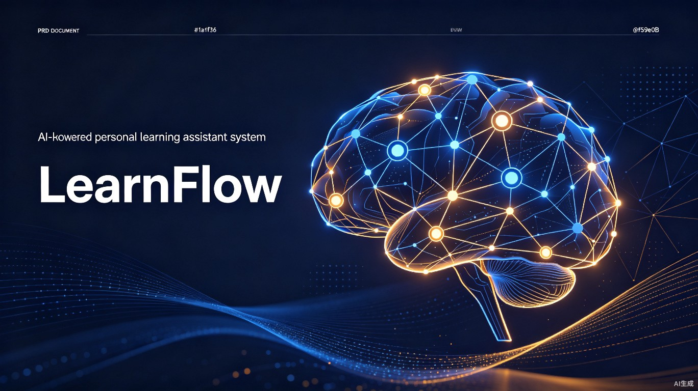

LearnFlow 是一款面向个人学习者的AI驱动学习辅助系统，通过将 刻意练习、海绵阅读法、深度工作、知识转化行动、批判性思维 五大经典学习方法论转化为可操作的软件功能，结合多Agent协同和跨学科（心理学/社会学/金融学）奖励机制，帮助用户实现更高效、更持久、更有深度的学习。
现有学习工具大多解决单一问题（记忆、专注、笔记），缺乏系统性的方法论支撑。LearnFlow 首次将五大经典学习方法论整合为统一的AI驱动平台，让"知道怎么学"变成"系统帮你学"。
需要系统学习方法、备考规划和知识管理的K12及大学生群体
需要持续技能提升、知识更新和职业发展的职场人士
需要深度知识管理、批判性思维和知识输出的知识工作者
追求个人成长、习惯养成和跨领域学习的自我提升者
| 层级 | 定价 | 核心权益 | 目标用户 |
|---|---|---|---|
| 免费版 | ¥0 | 基础学习引擎、有限知识图谱、社区功能 | 体验用户 |
| Pro版 | ¥39/月 | 全部5大引擎、完整知识图谱、AI Agent、高级统计 | 个人学习者 |
| Team版 | ¥99/人/月 | Pro全部功能 + 团队协作、学习小组、管理后台 | 学习小组/企业 |
| Enterprise版 | 定制 | 私有化部署、定制Agent、API接入、SLA保障 | 教育机构/企业 |
全球教育科技市场持续增长，AI驱动的学习工具成为最大增长点。据行业报告，到2027年超过60%的企业将采用AI驱动的知识管理工具[1]。
| 平台 | 间隔重复 | 知识图谱 | 专注管理 | AI辅助 | 游戏化 | 社交学习 | 批判思维 |
|---|---|---|---|---|---|---|---|
| Anki | ★★★★★ | ★☆☆☆☆ | ☆☆☆☆☆ | ★☆☆☆☆ | ★★☆☆☆ | ☆☆☆☆☆ | ☆☆☆☆☆ |
| Quizlet | ★★★★☆ | ★☆☆☆☆ | ☆☆☆☆☆ | ★★★★☆ | ★★★★☆ | ★★★☆☆ | ☆☆☆☆☆ |
| Notion AI | ☆☆☆☆☆ | ★★☆☆☆ | ☆☆☆☆☆ | ★★★★☆ | ☆☆☆☆☆ | ★★★☆☆ | ☆☆☆☆☆ |
| Forest | ☆☆☆☆☆ | ☆☆☆☆☆ | ★★★★★ | ☆☆☆☆☆ | ★★★★☆ | ★★☆☆☆ | ☆☆☆☆☆ |
| Habitica | ☆☆☆☆☆ | ☆☆☆☆☆ | ★★☆☆☆ | ☆☆☆☆☆ | ★★★★★ | ★★★★☆ | ☆☆☆☆☆ |
| Obsidian | ★★☆☆☆ | ★★★★★ | ☆☆☆☆☆ | ★★★☆☆ | ☆☆☆☆☆ | ★★☆☆☆ | ☆☆☆☆☆ |
| RemNote | ★★★★☆ | ★★★☆☆ | ☆☆☆☆☆ | ★★★☆☆ | ☆☆☆☆☆ | ☆☆☆☆☆ | ☆☆☆☆☆ |
| LearnFlow | ★★★★★ | ★★★★★ | ★★★★★ | ★★★★★ | ★★★★★ | ★★★★★ | ★★★★★ |
市场上没有任何一款产品同时覆盖 学习方法论引擎 + AI Agent协同 + 跨学科奖励机制 + 知识图谱 + 专注管理 五大维度。LearnFlow 的竞争优势在于系统性的方法论整合，而非单一功能的堆砌。
高质量内容筛选+音频学习，但被动学习为主，缺乏主动学习工具
专注力管理实用，但游戏化程度低，缺乏知识管理深度
间隔重复算法精准，但仅限词汇学习，功能单一
技术内容专业，但仅限IT领域，互动性有限
每一个功能都源自经过验证的学习科学理论，而非为了"功能丰富"而添加。用户感受到的不是工具，而是一位懂学习科学的AI导师。
外在奖励（积分/徽章）应增强而非替代内在学习动机。系统设计遵循自我决定理论，优先满足自主性、胜任感和归属感。
AI Agent不是简单的聊天机器人，而是具备教学方法论的虚拟导师。它能诊断学习问题、设计训练方案、提供即时反馈。
基于用户行为数据持续优化学习路径。每个用户的学习体验都是独一无二的，系统随用户成长而进化。
| 原则 | 描述 | 设计约束 |
|---|---|---|
| 认知负荷最小化 | 界面设计遵循认知负荷理论，减少无关信息干扰 | 单屏核心操作≤3个，信息密度适中 |
| 渐进式复杂度 | 功能随用户熟练度逐步解锁，避免新手 overwhelmed | 新手引导≤5步，高级功能渐进暴露 |
| 即时反馈 | 任何用户操作在200ms内获得视觉反馈 | API响应<500ms，动画<300ms |
| 数据主权 | 用户拥有完全的数据导出和控制权 | 支持一键导出全部数据（Markdown/JSON） |
| 隐私优先 | 学习数据加密存储，不用于广告 | 端到端加密，GDPR合规 |
本系统的核心差异化在于将五本经典学习方法论书籍的核心思想转化为可操作的软件引擎。每个引擎独立运行，又通过统一的学习数据层相互协同。
源自 Anders Ericsson《刻意练习》(Peak) 的核心思想：心理表征构建、舒适区边缘训练、即时反馈闭环、技能分解与聚焦。
| 方法论 | 软件功能 | 技术实现 | AI Agent角色 |
|---|---|---|---|
| 心理表征 | 知识图谱可视化 | Neo4j图数据库 + D3.js交互式渲染 | 自动提取概念，构建个人知识图谱 |
| 舒适区边缘 | 自适应难度引擎 | IRT项目反应理论建模 + 强化学习调参 | 实时计算"学习区"边界，推送最优难度任务 |
| 即时反馈 | 实时评估与纠错系统 | 单元测试/NLP分析/间隔重复算法 | 充当"虚拟导师"，分析错误根因 |
| 技能分解 | 微技能树与进度追踪 | 树状技能结构数据模型 + 前置条件图 | 自动拆解技能树，识别瓶颈节点 |
| 导师指导 | 智能教练系统 | 领域专家知识库 + 表现数据分析 | 诊断-处方-反馈全流程模拟 |
源自李小墨《海绵阅读法》的三层笔记结构、阅读七大能力体系、四阶段进阶模型。
| 方法论 | 软件功能 | 技术实现 | AI Agent角色 |
|---|---|---|---|
| 三层笔记 | 渐进式阅读笔记工具 | 三层数据模型（片段→章节→全书）+ 双向链接 | 自动提取关键片段生成笔记草稿 |
| 七大能力 | 阅读能力雷达图 | 多维能力模型 + 可视化雷达图 | 根据阅读行为自动评估各维度能力 |
| 四阶段进阶 | 阅读阶段诊断系统 | 基于行为数据的阶段判定算法 | 根据阶段推荐不同阅读策略 |
| 痛点解决 | 阅读痛点诊断器 | 决策树 + 实时行为检测 | 检测"卡点"并主动提供策略建议 |
| 思维导图+输出 | AI读书报告生成器 | NLP概念提取 + 模板引擎 | 碎片笔记自动整合为结构化输出 |
源自 Cal Newport《深度工作》的深度/浅层工作区分、注意力残留防护、四种深度工作策略、仪式感与时间块管理。
| 方法论 | 软件功能 | 技术实现 | AI Agent角色 |
|---|---|---|---|
| 深度/浅层区分 | 工作类型分类统计面板 | 应用使用数据自动分类 + 可视化图表 | 识别"伪工作"时间，建议优化 |
| 注意力残留 | 任务切换防护系统 | 窗口切换频率监测 + 冷却期提醒 | 检测高频切换，建议完成当前任务 |
| 四种策略 | 深度工作策略选择器 | 决策树 + 日历模板生成 | 根据职业特征推荐最适合策略 |
| 仪式感 | 深度工作启动仪式 | 系统免打扰API + 白噪音 + 番茄钟 | 自动执行启动仪式，生成工作摘要 |
| 时间块管理 | 智能时间块规划器 | 日历API集成 + 冲突检测 + 排程算法 | 根据精力曲线智能安排深度时间 |
源自 Ken Blanchard《知行差距》(Knowing-Doing Gap) 的精要筛选、绿灯思维、间隔重复跟进、教授他人内化。
| 方法论 | 软件功能 | 技术实现 | AI Agent角色 |
|---|---|---|---|
| 三重枷锁 | 知行差距诊断工具 | 诊断问卷 + 行为追踪（收藏vs实践比） | 识别最严重的"知行断裂点" |
| 精要筛选 | "少而精"知识过滤器 | 推荐算法 + 每日学习配额限制 | 每天只推荐1-2个最值得深入的内容 |
| 绿灯思维 | 新想法评估工作流 | 两步评估流程（绿灯→红灯） | 引导用户先发掘潜力再批判分析 |
| 间隔重复+跟进 | 知识行动跟进系统 | 艾宾浩斯遗忘曲线 + 行动项追踪 | 自动生成"7天行动计划"并推送提醒 |
| 教授他人 | "费曼学习"输出平台 | 场景模板 + NLP评估解释质量 | 扮演"学生"角色提问，识别理解盲区 |
源自 M. Neil Browne《学会提问》(Asking the Right Questions) 的海绵vs淘金思维、11步批判性思维清单、逻辑谬误识别、证据分级、隐藏假设挖掘。
| 方法论 | 软件功能 | 技术实现 | AI Agent角色 |
|---|---|---|---|
| 海绵vs淘金 | 阅读模式切换器 | 快速浏览/批判精读双模式 | 检测海绵模式时弹出淘金式提问 |
| 11步清单 | 论证分析工作台 | 结构化表单 + 可视化论证链路 | 自动提取结论和理由，标注歧义词 |
| 谬误识别 | 逻辑谬误检测器 | NLP分类模型 + 规则引擎混合方法 | 实时标注可疑谬误并提供解释 |
| 证据分级 | 证据可靠性评估标签 | 证据类型分类器 + 方法论质量评分 | 评估证据可靠性等级，标注弱证据 |
| 隐藏假设 | 假设挖掘引导器 | 引导性问题模板 + 逻辑跳跃检测 | 在论证"逻辑跳跃"处自动插入提问 |
flowchart TB
subgraph Input["输入阶段"]
A1[海绵阅读法引擎
高效阅读+三层笔记]
A2[批判性思维引擎
淘金式筛选+谬误检测]
end
subgraph Internalize["内化阶段"]
B1[刻意练习引擎
技能分解+自适应难度+即时反馈]
B2[知行转化引擎
精要筛选+行动计划+间隔跟进]
end
subgraph Protect["保护阶段"]
C1[深度工作引擎
专注保护+时间块+仪式感]
end
subgraph Output["输出阶段"]
D1[知行转化引擎
费曼输出+教授他人]
D2[批判性思维引擎
论证重构+知识验证]
end
A1 --> A2
A2 --> B1
A2 --> B2
B1 --> C1
B2 --> C1
C1 --> D1
C1 --> D2
D1 --> D2
D2 -.->|反馈循环| A1
智能目标设定、里程碑规划、进度追踪、自适应调整
概念节点自动提取、关系发现、可视化探索、薄弱点识别
深度工作模式、番茄钟、干扰防护、精力曲线分析
积分系统、成就徽章、排行榜、学习期货/期权、NFT证书
学习规划师、学科导师、练习出题者、进度追踪者
学习小组、师徒系统、协作任务、知识分享、排行榜
journey
title 用户完整学习旅程
section 注册与初始化
创建账号: 5: 用户
学习目标设定: 4: 用户, Agent
能力基线评估: 3: 用户, Agent
个性化方案生成: 5: Agent
section 日常学习
深度工作启动: 5: 用户
阅读与笔记: 4: 用户
刻意练习: 5: 用户, Agent
即时反馈: 5: Agent
section 知识内化
间隔复习: 4: 系统
知识图谱更新: 3: Agent
行动计划跟进: 4: Agent
section 输出与成长
费曼输出: 5: 用户
批判性验证: 4: Agent
成就解锁: 5: 系统
社群分享: 4: 用户
| Agent平台 | 核心优势 | 在LearnFlow中的角色 | 集成方式 |
|---|---|---|---|
| Hermes Agent | 内置学习闭环、自我改进、技能系统 | 核心学习导师Agent | API集成 + 技能插件 |
| OpenClaw | 多渠道集成、自托管、持久记忆 | 跨平台学习助手 | Gateway集成 + 消息推送 |
| HiClaw | Manager-Workers架构、安全凭证 | 学习团队协调器 | Manager调度 + Worker执行 |
| LangGraph | 状态图精确控制 | 学习路径编排引擎 | 状态机建模学习流程 |
| CrewAI | 角色扮演、极简API | 学习小组模拟 | 多Agent角色扮演 |
flowchart TB
subgraph Manager["Manager Agent - 学习规划师"]
M[HiClaw Manager
学习策略制定与任务调度]
end
subgraph Workers["Worker Agents - 专业导师团队"]
W1[阅读导师
海绵阅读法引擎]
W2[练习导师
刻意练习引擎]
W3[专注导师
深度工作引擎]
W4[思维导师
批判性思维引擎]
W5[行动导师
知行转化引擎]
end
subgraph Support["Support Agents"]
S1[进度追踪者
数据分析与报告]
S2[激励官
奖励发放与排行榜]
S3[社群管理员
学习小组协调]
end
subgraph User["用户"]
U[学习者]
end
U <-->|自然语言交互| M
M -->|任务派发| W1 & W2 & W3 & W4 & W5
M -->|协调| S1 & S2 & S3
W1 & W2 & W3 & W4 & W5 -->|执行结果| M
S1 & S2 & S3 -->|状态同步| M
| 能力 | 描述 | 负责Agent | 触发条件 |
|---|---|---|---|
| 学习计划生成 | 根据目标自动生成个性化学习路径 | 学习规划师 | 用户设定新目标时 |
| 难度自适应 | 实时调整练习难度至"学习区" | 练习导师 | 每次练习完成后 |
| 谬误检测 | 扫描文本中的逻辑谬误并标注 | 思维导师 | 用户进入批判精读模式时 |
| 专注保护 | 屏蔽干扰、管理通知、记录专注时长 | 专注导师 | 用户启动深度工作模式时 |
| 行动跟进 | 生成7天行动计划并间隔推送提醒 | 行动导师 | 用户完成新知识学习后 |
| 知识图谱更新 | 从笔记中提取概念并更新图谱 | 阅读导师 | 用户保存笔记时 |
| 奖励发放 | 计算并发放学习积分、解锁成就 | 激励官 | 完成学习任务/达成里程碑时 |
| 进度报告 | 生成周/月学习分析报告 | 进度追踪者 | 定期自动生成 |
LearnFlow 的奖励系统融合心理学、社会学和金融学三个学科的理论，构建多层次、可持续的激励体系。
连续强化→变动比率强化的渐进过渡。初期每次学习都给奖励，后期转为随机惊喜奖励维持长期参与
自适应难度确保挑战-技能平衡。心流中不打断，心流结束后给予总结性奖励
奖励预测误差设计：偶尔超出预期的惊喜宝箱、随机稀有成就、进度条接近满时的加速感
自主性（自选学习路径）、胜任感（渐进式难度）、归属感（学习社区）三维满足
学习群体标签（"Python精英班"）、身份进阶（学徒→大师）、群体专属标识
榜样展示、师徒配对、协作任务奖励、知识分享积分
好友学习动态、赛季制排行榜、限时挑战赛。只显示前N名和自身位置，避免底部挫败感
知识声誉积分、专家认证标识、邀请奖励、学习圈主特权
学习挖矿（完成任务获积分）→ 消耗（兑换奖励）→ 质押（锁定积分获更高收益）→ 通缩（部分销毁维持价值）
买入学习目标付保证金，按时完成返还+奖励，未完成没收。利用损失厌恶增强承诺力度
完成学习路径铸造不可转让SBT证书，包含学习内容、成绩、时间戳，形成个人"学习信用画像"
投入（时间+精力+专注度）vs 产出（掌握度+技能提升+成果）可视化，识别高效学习时段
flowchart TB
subgraph Psych["心理学层"]
P1[SDT自主性→学习路径自选]
P2[心流平衡→自适应难度]
P3[多巴胺回路→随机惊喜]
P4[操作性强化→变动比率]
end
subgraph Social["社会学层"]
S1[群体认同→学习社区]
S2[同伴竞争→排行榜]
S3[社交资本→声誉系统]
S4[社群学习→师徒协作]
end
subgraph Finance["金融学层"]
F1[代币经济→积分挖矿/销毁]
F2[期货期权→目标承诺]
F3[NFT认证→知识资产]
F4[ROI量化→投入产出]
end
subgraph Core["统一奖励引擎"]
R[奖励决策引擎
个性化适配 + A/B测试]
end
P1 & P2 & P3 & P4 --> R
S1 & S2 & S3 & S4 --> R
F1 & F2 & F3 & F4 --> R
R --> U[用户学习行为增强]
U -.->|反馈数据| R
| 层级 | 技术选型 | 选型理由 |
|---|---|---|
| 前端框架 | React 18 + TypeScript | 生态成熟、组件化开发、类型安全 |
| UI组件库 | Ant Design 5 + Tailwind CSS | 企业级组件丰富 + 原子化样式定制 |
| 状态管理 | Zustand + React Query | 轻量级状态管理 + 服务端状态缓存 |
| 知识图谱可视化 | D3.js + React Flow | 灵活的图可视化 + 节点交互编辑 |
| 后端框架 | Python FastAPI | 异步高性能、AI/ML生态友好、自动API文档 |
| AI/LLM层 | LangChain + LangGraph | Agent编排、RAG、工具调用标准化 |
| 数据库（关系型） | PostgreSQL 16 | JSONB支持、全文搜索、成熟稳定 |
| 数据库（图数据库） | Neo4j | 知识图谱存储与查询的最优选择 |
| 缓存层 | Redis | 会话管理、排行榜、实时数据缓存 |
| 消息队列 | RabbitMQ / Celery | 异步任务处理、Agent任务调度 |
| 搜索引擎 | Elasticsearch | 全文搜索、笔记检索、知识发现 |
| 对象存储 | MinIO / AWS S3 | 文件、图片、NFT证书存储 |
| 容器化 | Docker + Docker Compose | 开发环境一致性、部署标准化 |
| CI/CD | GitHub Actions | 自动化测试、构建、部署流水线 |
flowchart TB
subgraph Client["前端层 (React 18)"]
Web[Web应用
React + TypeScript]
Mobile[移动端
React Native]
end
subgraph Gateway["网关层"]
NGINX[Nginx
反向代理 + 负载均衡]
API_GW[API Gateway
认证 + 限流 + 路由]
end
subgraph Services["服务层 (FastAPI)"]
Auth[认证服务
JWT + OAuth2]
Learn[学习引擎服务
5大方法论引擎]
Agent[Agent服务
LangChain编排]
Reward[奖励服务
积分/成就/排行榜]
Social[社交服务
小组/师徒/社区]
Search[搜索服务
Elasticsearch]
end
subgraph Data["数据层"]
PG[(PostgreSQL
用户/学习记录)]
Neo[(Neo4j
知识图谱)]
Redis[(Redis
缓存/会话/排行)]
ES[(Elasticsearch
全文索引)]
S3[(MinIO/S3
文件存储)]
end
subgraph AI["AI层"]
LLM[LLM API
GPT-4o / Claude]
Agent_Platform[Agent平台
Hermes/OpenClaw/HiClaw]
ML[ML模型
IRT/推荐/NLP]
end
Web & Mobile --> NGINX
NGINX --> API_GW
API_GW --> Auth & Learn & Agent & Reward & Social & Search
Auth --> PG & Redis
Learn --> PG & Neo & Redis
Agent --> LLM & Agent_Platform & ML
Reward --> PG & Redis
Social --> PG & Redis
Search --> ES
Learn --> S3
开发环境：Docker Compose 本地一键启动全部服务
生产环境：Kubernetes 集群部署，支持水平扩展
企业版：支持私有化部署（On-Premise），数据完全隔离
erDiagram
USERS ||--o{ LEARNING_PLANS : creates
USERS ||--o{ LEARNING_RECORDS : generates
USERS ||--o{ KNOWLEDGE_NODES : owns
USERS ||--o{ REWARDS : earns
USERS ||--o{ SOCIAL_CONNECTIONS : has
USERS {
uuid id PK
string username UK
string email UK
string password_hash
string avatar_url
jsonb preferences
timestamp created_at
}
LEARNING_PLANS ||--|{ PLAN_MILESTONES : contains
LEARNING_PLANS {
uuid id PK
uuid user_id FK
string title
text description
string status
jsonb target_skills
timestamp deadline
timestamp created_at
}
LEARNING_RECORDS {
uuid id PK
uuid user_id FK
uuid plan_id FK
string engine_type
jsonb session_data
float difficulty_level
float performance_score
timestamp started_at
timestamp completed_at
}
KNOWLEDGE_NODES ||--o{ KNOWLEDGE_RELATIONS : relates
KNOWLEDGE_NODES {
uuid id PK
uuid user_id FK
string concept
text description
string category
float mastery_level
jsonb metadata
}
KNOWLEDGE_RELATIONS {
uuid id PK
uuid source_node_id FK
uuid target_node_id FK
string relation_type
float strength
}
REWARDS {
uuid id PK
uuid user_id FK
string reward_type
int points
string badge_name
jsonb metadata
timestamp earned_at
}
SOCIAL_CONNECTIONS {
uuid id PK
uuid user_id FK
uuid connected_user_id FK
string connection_type
timestamp created_at
}
| 表名 | 核心字段 | 用途 | 索引策略 |
|---|---|---|---|
| users | id, username, email, preferences | 用户基础信息与偏好设置 | username/email唯一索引，preferences GIN索引 |
| learning_plans | id, user_id, target_skills, status | 学习计划与目标管理 | user_id索引，status部分索引 |
| learning_sessions | id, user_id, engine_type, performance | 每次学习会话的详细记录 | user_id+created_at复合索引 |
| skill_trees | id, user_id, domain, nodes_json | 用户技能树结构 | user_id+domain唯一索引 |
| knowledge_graph | 存储在Neo4j | 概念节点与关系 | 节点标签索引，关系类型索引 |
| reward_ledger | id, user_id, type, amount, balance | 积分流水账本 | user_id索引，created_at索引 |
| achievements | id, user_id, badge_id, earned_at | 成就解锁记录 | user_id+badge_id唯一索引 |
| social_groups | id, name, leader_id, member_count | 学习小组信息 | leader_id索引 |
| 方法 | 端点 | 描述 | 认证 |
|---|---|---|---|
POST | /api/v1/auth/register | 用户注册 | 否 |
POST | /api/v1/auth/login | 用户登录（返回JWT） | 否 |
GET | /api/v1/users/me | 获取当前用户信息 | JWT |
POST | /api/v1/plans | 创建学习计划 | JWT |
GET | /api/v1/plans/{id} | 获取计划详情 | JWT |
PUT | /api/v1/plans/{id} | 更新学习计划 | JWT |
POST | /api/v1/learning/sessions | 开始学习会话 | JWT |
POST | /api/v1/learning/sessions/{id}/complete | 完成学习会话 | JWT |
GET | /api/v1/knowledge/graph | 获取知识图谱 | JWT |
POST | /api/v1/knowledge/nodes | 添加知识节点 | JWT |
POST | /api/v1/agent/chat | 与AI Agent对话 | JWT |
POST | /api/v1/agent/analyze | 提交内容进行分析 | JWT |
GET | /api/v1/rewards/balance | 查询积分余额 | JWT |
GET | /api/v1/rewards/leaderboard | 获取排行榜 | JWT |
POST | /api/v1/rewards/claim | 兑换奖励 | JWT |
GET | /api/v1/social/groups | 获取学习小组列表 | JWT |
POST | /api/v1/social/groups | 创建学习小组 | JWT |
GET | /api/v1/analytics/dashboard | 获取学习分析仪表盘数据 | JWT |
| 页面 | 路由 | 核心功能 | 优先级 |
|---|---|---|---|
| 登录/注册 | /auth | JWT认证、OAuth社交登录、新手引导 | P0 |
| 学习仪表盘 | /dashboard | 今日任务、学习统计、进度概览、Agent对话入口 | P0 |
| 学习计划 | /plans | 计划创建、里程碑管理、进度追踪 | P0 |
| 深度工作模式 | /deep-work | 全屏专注界面、番茄钟、白噪音、干扰屏蔽 | P0 |
| 知识图谱 | /knowledge-graph | 交互式图谱可视化、节点编辑、关系探索 | P0 |
| 阅读工作台 | /reader | 三层笔记、模式切换、AI辅助标注 | P1 |
| 练习中心 | /practice | 自适应练习、即时反馈、错题本 | P1 |
| 批判思维工作台 | /critical-thinking | 论证分析、谬误检测、证据评估 | P1 |
| 奖励中心 | /rewards | 积分余额、成就墙、排行榜、兑换商城 | P1 |
| 社交学习 | /community | 学习小组、师徒系统、知识分享 | P2 |
| 分析报告 | /analytics | 学习数据可视化、ROI分析、能力雷达图 | P2 |
| 个人设置 | /settings | 偏好配置、数据导出、隐私设置 | P2 |
布局：左侧导航栏（240px）+ 主内容区（自适应）+ 右侧Agent面板（可折叠，320px）
色彩：主色 #2563eb（蓝）、辅助色 #f59e0b（金）、背景 #f8f9fb、文字 #1a1f36
字体：标题 Instrument Sans Bold、正文 WorkSans Regular、代码 JetBrains Mono
响应式：桌面≥1024px三栏、平板768-1024px两栏、手机<768px单栏
| 里程碑 | 时间 | 交付物 | 验收标准 |
|---|---|---|---|
| M1 - Alpha | 2026年9月 | 基础平台 + 2个引擎 | 用户可注册、创建计划、使用刻意练习和专注模式 |
| M2 - Beta | 2026年12月 | 全引擎 + Agent集成 | 5大引擎全部可用，Agent可对话和辅助学习 |
| M3 - RC | 2027年3月 | 完整功能 + 社交 | 奖励系统、社交功能、移动端可用 |
| M4 - GA | 2027年6月 | 商业化版本 | 支付系统、多版本、安全审计通过、公测完成 |
| 风险类别 | 风险描述 | 影响等级 | 应对策略 |
|---|---|---|---|
| 技术风险 | AI Agent响应延迟或稳定性问题 | 高 | 多模型冗余（GPT-4o + Claude降级）、请求队列、超时重试、缓存常用回答 |
| 技术风险 | Neo4j知识图谱性能瓶颈 | 中 | 节点数量限制、分层加载、预计算常用查询、读写分离 |
| 产品风险 | 功能过于复杂导致用户流失 | 高 | 渐进式功能解锁、新手引导优化、A/B测试验证、用户反馈快速迭代 |
| 产品风险 | 奖励系统导致外在动机替代内在动机 | 中 | 遵循SDT理论设计、定期评估用户动机变化、提供"纯净模式"关闭奖励 |
| 市场风险 | 大厂推出类似产品（如字节/腾讯） | 中 | 深耕方法论差异化、建立社区壁垒、快速迭代保持领先 |
| 合规风险 | 用户学习数据隐私合规 | 高 | GDPR/个人信息保护法合规设计、数据加密、用户数据导出/删除权 |
| 成本风险 | LLM API调用成本过高 | 中 | 本地模型备选方案（LLaMA）、请求缓存、分级模型策略（简单任务用小模型） |